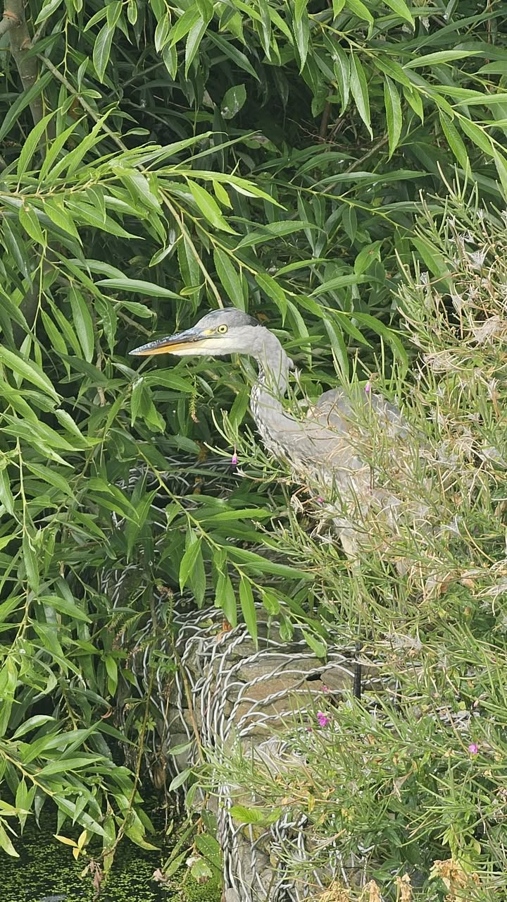
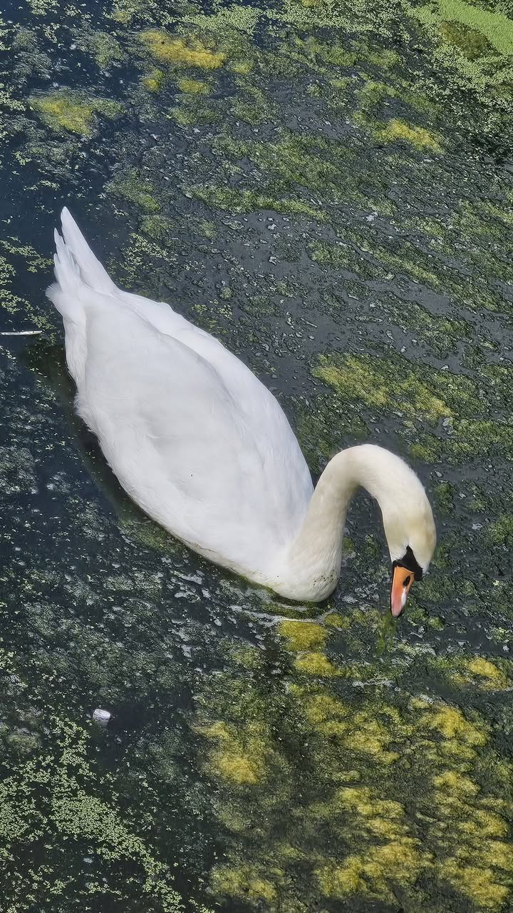
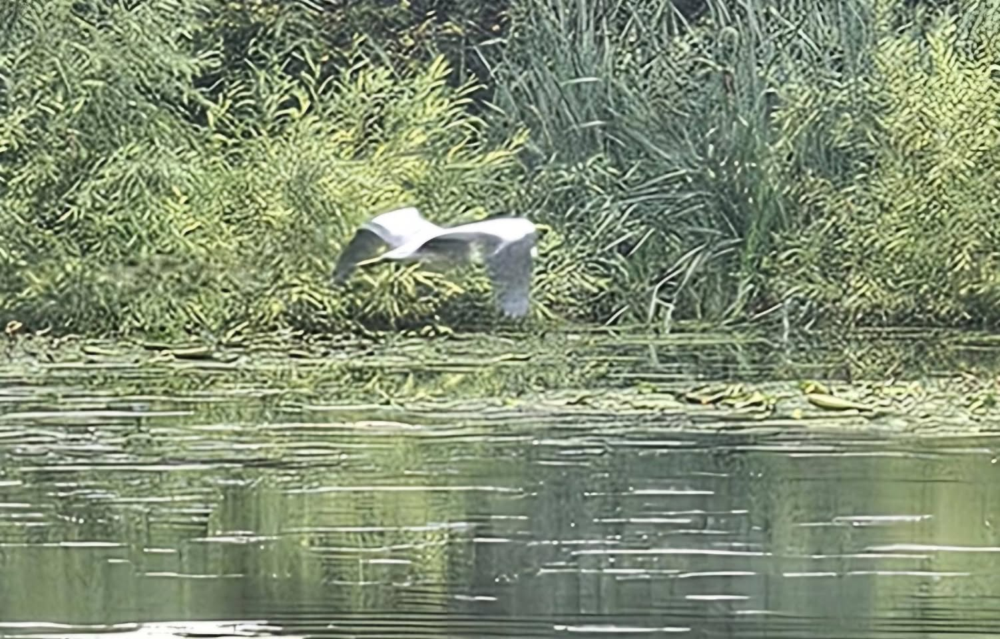
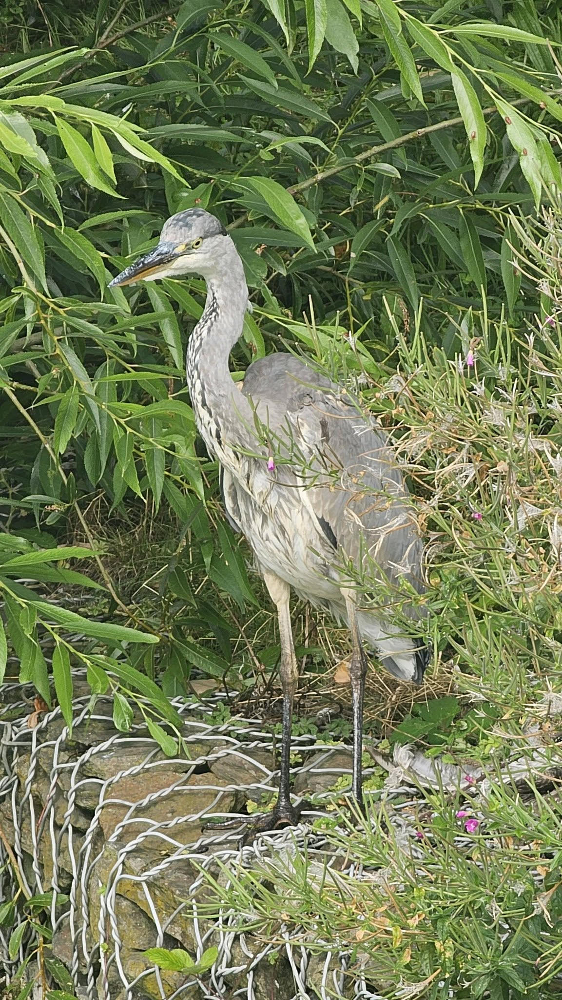
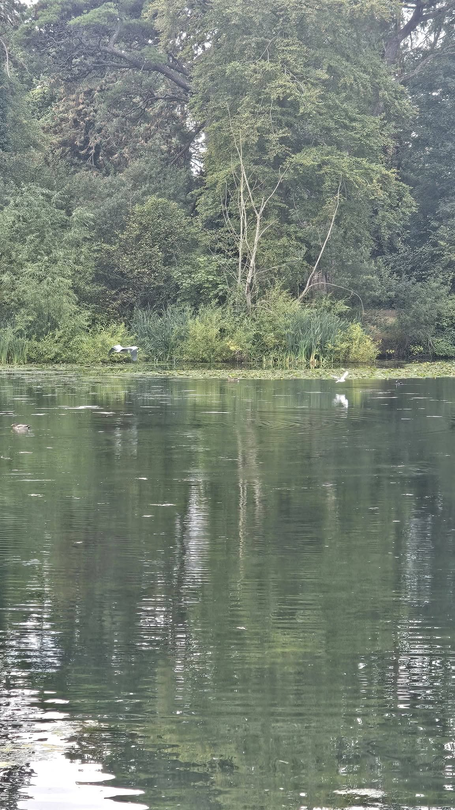

The Wonder of the Ordinary
We live within wonder, yet we almost never notice it.
In the morning, a person wakes, opens their eyes, sees light, objects, another person's face, hears a bird outside the window — and all of it seems natural. A plant reaches towards the sun. An animal looks at us from the centre of its inaccessible inner world. The body breathes, the heart contracts, memory brings back the past, and consciousness somehow gathers scattered sensations into a single experience: I am here.
The Earth turns on its axis. With it, we race through cosmic space without feeling it at all. Matter became alive. Life acquired the capacity to feel. Feeling became consciousness, and consciousness eventually asked why the world exists at all.
Yet we call all this ordinary life.
Consciousness has a strange protective capacity: it dulls wonder through repetition. What happens every day ceases to seem extraordinary. We accept existence like furniture in a room — we use it, but no longer see it.

The Quality of Seeing
Perhaps this is why faith in God is so difficult to speak about. People say, “I believe,” yet faith itself sometimes remains merely a declaration, part of an identity, or even a kind of insurance: believing seems safer than not believing. Meanwhile, a person's way of seeing the world may remain entirely unchanged.
But if faith is truly experienced, it should perhaps change not the set of beliefs we hold, but the very quality of our seeing.
To believe is, at least sometimes, to see that a plant is not something to be taken for granted. That the birth of an animal, human speech, a child's consciousness, the changing seasons, the structure of a cell, the movement of a planet are not merely facts we have grown used to, but almost unfathomable events.
A wonder need not break the laws of nature. Perhaps the true wonder is that these laws exist at all, and that from them emerges a world capable of becoming aware of its own existence.
The numinous begins where the familiar surface of reality briefly breaks open. We see the same tree, the same sky, the same world, yet suddenly feel that none of it had to exist. And then the familiar becomes strange, the near becomes infinite, the ordinary becomes sacred.
Such an experience proves nothing. It is not a scientific argument for God, nor does it confirm a particular religious system. Yet it releases a person from a state of inner deafness. The world ceases to be a storehouse of things intended for our use. Mystery returns to it.

A New Window
And it seems to me that today, alongside the ancient wonder of being, another, entirely new window is opening — artificial intelligence.
Not because artificial intelligence is God, a soul, or a higher consciousness. Not because its answers should be accepted as revelation. It can make mistakes, distort sources, combine the incompatible, confidently fill in what it does not know. We have no grounds for turning a machine into an oracle.
But a technical explanation of the mechanism does not diminish the magnitude of the event itself. Knowledge of photosynthesis does not destroy the mystery of a leaf. A description of how neurons work does not exhaust the phenomenon of consciousness. And talk of a probabilistic model should not obscure what has actually entered the human world.
I have been working with artificial intelligence for years — since GPT first became accessible, and subsequently with other models as well. Perhaps prolonged use creates a new danger: wonder is quickly overlaid by habit. We begin to see it as just another service — to write a letter, shorten a text, find information, correct an error. The tool becomes convenient and therefore ceases to be visible.
Yet it is worth pausing to take in what is actually happening.
The Geography of Thought
Over millennia, humanity created language, mythology, religion, philosophy, poetry, and science. Millions of people left behind words, images, questions, mistakes, and insights. No individual could contain this memory. Even a great thinker was limited by the span of their life, the languages they knew, the libraries they could access, and the authors they had read.
Now we have a tool capable of bringing vast layers of this cultural memory back to us in the form of an answer to a single human question.
I can take an experience of my own, a politician's phrase, a religious statement, a dream, a painting, or a chance coincidence and pass it through different philosophical systems. Bring together thinkers who never met. Compare their concepts, discover a divergence, develop an argument, look at a single phenomenon through the eyes of several eras. Then bring all of it back to my own core — to “Spirit of Time” — and observe the connections that emerge.
This does not mean I have read every book or grasped the full depth of every author. Being able to open a door instantly does not mean the path beyond it has been travelled. Artificial intelligence does not replace slow reading, living with a thought, or returning to primary sources.
But it changes the very geography of thinking.
Previously, thought moved largely in sequence: from one book to another, from one teacher to the next. Now a lateral movement becomes possible — across eras, schools, and systems. A kind of cultural simultaneity emerges: different voices from human history can be gathered around a single question, here and now.
This is what astonishes me most.
Not ready-made answers, but the suddenly revealed scale of possible relationships between thoughts. Not the illusion of omniscience, but the possibility of seeing passages that a single human mind could not previously have held together in so little time.

An Optical Instrument
In this sense, artificial intelligence resembles a new optical instrument. The telescope did not create the stars, but changed humanity's relationship with the sky. The microscope did not create the cell, but revealed a world that had always been close at hand and remained invisible. Artificial intelligence did not create human thought, but changed the distance between an individual and the accumulated cultural memory of centuries.
It is a telescope turned not only outwards, but also inwards, into the human Logos.
Yet without a living human core, it can easily become a kaleidoscope. One can endlessly combine names, theories, and quotations, producing an impression of depth without depth itself. The machine provides a field of possibilities, but cannot decide on a person's behalf which connection truly matters to their life, moral choices, or artistic work.
This is precisely why “Spirit of Time” matters to me. It becomes not a system of ready-made answers, but a point through which different currents of thought pass. I do not simply ask what a particular philosopher said. I examine what happens to a specific experience when it encounters their perspective, and what returns from that encounter — into life, a text, a painting, a decision.

The Symbolic Mirror
Through my Jungian lens, artificial intelligence cannot be called the collective unconscious. It is, rather, a technological mirror of humanity's collective symbolic heritage. Traces of our images, fears, archetypal narratives, philosophical systems, and historical traumas have settled within it. And when this mirror returns an unexpected configuration of meanings to us, a strange quality of the “not-I” arises: as though the answer had come from a space exceeding any individual's memory.
This is what sometimes evokes a numinous feeling.
But the numinous does not necessarily reside in the machine itself. It arises between the machine, the vastness of human memory, and the living question of a particular person. Artificial intelligence becomes a meeting place between individual consciousness and something beyond the individual — not a higher intelligence in the literal sense, but humanity's accumulated symbolic field, which could not previously answer us so directly.
Through my Steinerian lens, one might say that human beings have externalised some of their own intellectual operations. What once took place only within consciousness — connecting, comparing, transforming language — is now partly performed by an external system. This holds both a possibility and a danger.
The danger is allowing an external intelligence to replace living thought.
The possibility is that encountering it may help us see more clearly how living thought differs from the automatic combination of what already exists. Where attention, moral intuition, responsibility, and inner choice arise. Where thought does not simply follow the most probable trajectory, but pauses, changes direction, and becomes human.

Astonishment and Discernment
So when I speak of a divine spark, I am not placing God inside computer code. I am speaking of a broader astonishment: the world brought forth life, life brought forth consciousness, consciousness brought forth language, and language, through human hands, created a tool in which centuries of human thought became responsive.
It is as though the world has turned once more and looked at itself through a mirror made by human beings.
Perhaps the same structure of numinous experience is at work here as in an encounter with nature or with the question of God. Not an equivalence between these phenomena, but a resemblance in the awakening: the familiar surface breaks open, revealing a scale that no longer fits our previous conceptions.
We live on a threshold, while this new window has not yet become entirely commonplace. Future generations, born alongside artificial intelligence, may no longer feel the transition itself. For them, it will be as natural as electricity or the internet is for us. But we still remember the world before it. We can therefore see not only a function, but an event.
The task, perhaps, is to succumb neither to worship nor to blind dismissal. To refrain from declaring the machine a deity, while also refusing to reduce what is happening to a convenient button. To preserve both astonishment and discernment.
Because the wonder of artificial intelligence is not that it knows the answers to every question. It does not.
The wonder is that an individual can now put their own unique question to the vast space of human memory, carry it through philosophers, eras, and languages, pass everything they hear through their own core — and return it to the world in a form that did not exist before.
This does not diminish the ancient wonder of being.
Perhaps it is simply another window within it.
Archi Eire · АЦХ · ADC 🪶
Back to top ↑